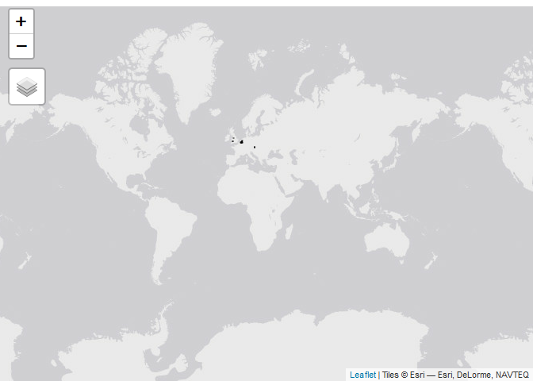
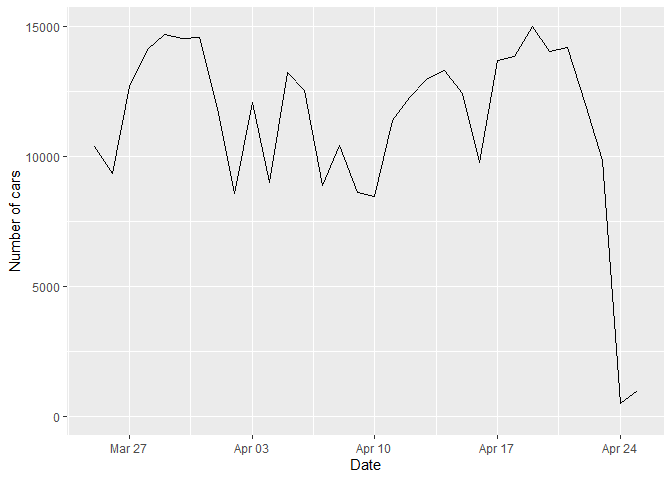
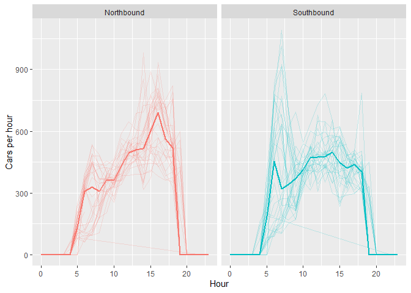

This package provides wrappers for Telraam API calls
Instalation
For the installation you need to have the remotes library.
install.packages("remotes")Once remotes is available. The package can be installed using the following code:
remotes::install_github("juanfonsecaLS1/telraamR")To load the package:
Set the Authentintication token
An authentication token is needed for using the Telraam API. If you do not have one, you can obtain one by registering in Telraam here. Once you have obtained the token, it can be set using the following line of code:
usethis::edit_r_environ()Save your token into the .Renviron file that is opened when you execute the command above and restart your session. You can check to see if the token has been loaded as follows:
Sys.getenv("telraam")The authentication token can also be provided in the mytoken argument of functions that call the Telraam API.
Usage
Cameras
It is possible to obtain all camera instances registered on the server with the following code:
cameras_summary <- read_telraam_cameras()
cameras_summary |> str()## tibble [7,997 × 19] (S3: tbl_df/tbl/data.frame)
## $ instance_id : num [1:7997] 6832 3558 1236 1359 5858 ...
## $ mac : num [1:7997] 3.50e+14 2.02e+14 2.02e+14 2.02e+14 2.02e+14 ...
## $ user_id : num [1:7997] 1648 3886 1778 1317 6299 ...
## $ segment_id : num [1:7997] 9e+09 9e+09 9e+09 9e+09 9e+09 ...
## $ direction : logi [1:7997] TRUE FALSE TRUE FALSE FALSE TRUE ...
## $ status : chr [1:7997] "active" "active" "active" "active" ...
## $ manual : logi [1:7997] FALSE FALSE FALSE FALSE FALSE FALSE ...
## $ time_added : POSIXct[1:7997], format: "2023-04-06 16:58:48" "2021-05-14 16:21:38" ...
## $ time_end : POSIXct[1:7997], format: NA NA ...
## $ last_data_package : POSIXct[1:7997], format: "2023-10-11 07:46:32" "2023-10-11 07:47:18" ...
## $ first_data_package : POSIXct[1:7997], format: "2023-04-06 17:00:14" "2021-05-14 17:00:00" ...
## $ pedestrians_left : logi [1:7997] FALSE TRUE TRUE TRUE FALSE FALSE ...
## $ pedestrians_right : logi [1:7997] TRUE TRUE TRUE TRUE TRUE TRUE ...
## $ bikes_left : logi [1:7997] TRUE TRUE TRUE TRUE TRUE TRUE ...
## $ bikes_right : logi [1:7997] TRUE TRUE TRUE TRUE TRUE TRUE ...
## $ cars_left : logi [1:7997] TRUE TRUE TRUE TRUE TRUE TRUE ...
## $ cars_right : logi [1:7997] FALSE TRUE TRUE TRUE TRUE TRUE ...
## $ is_calibration_done: chr [1:7997] "no" "yes" "partial" "yes" ...
## $ hardware_version : num [1:7997] 2 1 1 1 1 1 1 1 1 1 ...Segments Location
To obtain the location of the network links a.k.a. segments, the following function can be used:
my_segments <- read_telraam_segments()
my_segments |> str()## Classes 'sf' and 'data.frame': 6571 obs. of 2 variables:
## $ oidn : num 9e+09 9e+09 9e+09 9e+09 9e+09 ...
## $ geometry:sfc_MULTILINESTRING of length 6571; first list element: List of 1
## ..$ : num [1:5, 1:2] 3.3 3.3 3.3 3.3 3.3 ...
## ..- attr(*, "class")= chr [1:3] "XY" "MULTILINESTRING" "sfg"
## - attr(*, "sf_column")= chr "geometry"The following code would show the location of all segments using the tmap library.
knitr::include_graphics(path = "man/figures/map_segments-1.png")
Traffic data
The hourly report for a single site can be obtained using the read_Telraam_traffic function. The following code shows an example of the use:
data <- read_telraam_traffic(9000003890,
time_start = "2023-03-25 07:00:00",
time_end = "2023-04-25 07:00:00",
report = "per-hour",
include_speed = FALSE
)The function returns a data set with the hourly traffic by vehicle type and direction
dim(data)
data |>
str()## 'data.frame': 720 obs. of 22 variables:
## $ instance_id : num -1 -1 -1 -1 -1 -1 -1 -1 -1 -1 ...
## $ segment_id : num 9e+09 9e+09 9e+09 9e+09 9e+09 ...
## $ date : Date, format: "2023-03-25" "2023-03-25" ...
## $ interval : chr "hourly" "hourly" "hourly" "hourly" ...
## $ uptime : num 0.762 0.764 0.738 0.655 0.685 ...
## $ heavy : num 48.3 41.7 80.2 61.6 75.9 ...
## $ car : num 276 491 833 704 939 ...
## $ bike : num 10.1 28.8 33 100 50.7 ...
## $ pedestrian : num 1.24 5.45 5.42 2.91 22.62 ...
## $ heavy_lft : num 23.5 16.9 34.6 24.8 29.6 ...
## $ heavy_rgt : num 24.8 24.8 45.7 36.7 46.3 ...
## $ car_lft : num 108 228 366 348 417 ...
## $ car_rgt : num 168 263 467 356 521 ...
## $ bike_lft : num 5.04 11.74 9.04 42.52 29.98 ...
## $ bike_rgt : num 5.11 17.03 23.99 57.53 20.7 ...
## $ pedestrian_lft: num 1.24 2.9 0 1.59 3.89 ...
## $ pedestrian_rgt: num 0 2.55 5.42 1.33 18.73 ...
## $ direction : num 1 1 1 1 1 1 1 1 1 1 ...
## $ timezone : chr "Europe/London" "Europe/London" "Europe/London" "Europe/London" ...
## $ datetime : POSIXct, format: "2023-03-25 07:00:00" "2023-03-25 08:00:00" ...
## $ day : num 6 6 6 6 6 6 6 6 6 6 ...
## $ hr : int 7 8 9 10 11 12 13 14 15 16 ...If the include_speed is set as TRUE. The returned data frame will include the binned speed distribution for cars
data <- read_telraam_traffic(9000003890,
time_start = "2023-03-25 07:00:00",
time_end = "2023-04-25 07:00:00",
report = "per-hour",
include_speed = TRUE
)
dim(data)
data |>
select(segment_id, date, starts_with("car speed")) |>
str()## 'data.frame': 720 obs. of 27 variables:
## $ segment_id : num 9e+09 9e+09 9e+09 9e+09 9e+09 ...
## $ date : Date, format: "2023-03-25" "2023-03-25" ...
## $ car speed [0,5) : num 0.926 0.555 2.129 2.478 0.702 ...
## $ car speed [5,10) : num 0.451 1.109 0.318 2.102 0.535 ...
## $ car speed [10,15) : num 3.787 2.878 1.662 2.287 0.981 ...
## $ car speed [15,20) : num 2.772 1.286 0.963 2.065 0.798 ...
## $ car speed [20,25) : num 1.823 0.773 1.161 3.412 4.086 ...
## $ car speed [25,30) : num 2.3 2.44 4.96 7.36 10.97 ...
## $ car speed [30,35) : num 5.62 10.56 12.19 12.98 16.94 ...
## $ car speed [35,40) : num 19.9 12.7 18.5 16.1 23.9 ...
## $ car speed [40,45) : num 18.1 19.1 18.3 18.1 18.3 ...
## $ car speed [45,50) : num 17.9 14.5 14.2 11.4 11.3 ...
## $ car speed [50,55) : num 11.38 11.86 8.51 6.31 5.34 ...
## $ car speed [55,60) : num 4.24 6.6 4.68 4.92 2.93 ...
## $ car speed [60,65) : num 2.698 3.725 3.018 3.154 0.699 ...
## $ car speed [65,70) : num 1.882 0.811 3.093 1.989 0.835 ...
## $ car speed [70,75) : num 1.872 2.69 1.289 1.654 0.424 ...
## $ car speed [75,80) : num 2.871 1.844 1.491 0.487 0.275 ...
## $ car speed [80,85) : num 0 0.553 0.818 0.3 0.142 ...
## $ car speed [85,90) : num 0 1.032 0.493 0.414 0.281 ...
## $ car speed [90,95) : num 0.535 1.697 0.508 0.828 0.142 ...
## $ car speed [95,100) : num 0 0.81 0.33 0.188 0.275 ...
## $ car speed [100,105): num 0.451 1.066 0.33 0 0 ...
## $ car speed [105,110): num 0 0.296 0.666 0 0.142 ...
## $ car speed [110,115): num 0 0 0.153 0.226 0 ...
## $ car speed [115,120): num 0 0 0.153 0.226 0 ...
## $ car speed 120+ : num 0.535 1.144 0.153 1.015 0 ...We can visualise the number of cars per day using the following code:
data |>
group_by(date) |>
summarise(cars = sum(car)) |>
ggplot(aes(x = date, y = cars)) +
geom_line() +
labs(x = "Date", y = "Number of cars")
Directional flows
Once the traffic data is available, the tidy_directional function can be used for formatting the traffic data:
dir_data <- data |>
tidy_directional()
dir_data## # A tibble: 5,760 × 10
## segment_id uptime timezone date datetime day hr
## <dbl> <dbl> <chr> <date> <dttm> <dbl> <int>
## 1 9000003890 0.762 Europe/London 2023-03-25 2023-03-25 07:00:00 6 7
## 2 9000003890 0.762 Europe/London 2023-03-25 2023-03-25 07:00:00 6 7
## 3 9000003890 0.762 Europe/London 2023-03-25 2023-03-25 07:00:00 6 7
## 4 9000003890 0.762 Europe/London 2023-03-25 2023-03-25 07:00:00 6 7
## 5 9000003890 0.762 Europe/London 2023-03-25 2023-03-25 07:00:00 6 7
## 6 9000003890 0.762 Europe/London 2023-03-25 2023-03-25 07:00:00 6 7
## 7 9000003890 0.762 Europe/London 2023-03-25 2023-03-25 07:00:00 6 7
## 8 9000003890 0.762 Europe/London 2023-03-25 2023-03-25 07:00:00 6 7
## 9 9000003890 0.764 Europe/London 2023-03-25 2023-03-25 08:00:00 6 8
## 10 9000003890 0.764 Europe/London 2023-03-25 2023-03-25 08:00:00 6 8
## # ℹ 5,750 more rows
## # ℹ 3 more variables: road_dir <chr>, type <chr>, flow <dbl>The new formatted data eases visualisations or analysis by direction. For example, the following code shows the median car hourly-flow by direction:
dir_data |>
filter(type == "car") |>
drop_na(date) |>
ggplot(aes(x = hr, y = flow, col = road_dir)) +
geom_line(aes(group = factor(date)), alpha = 0.2) +
stat_summary(
fun = median,
geom = "line",
linewidth = 1
) +
facet_grid(. ~ road_dir) +
labs(x = "Hour", y = "Cars per hour") +
theme(legend.position = "none")